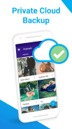

Keepsafe 付费账本：¥238/年的私人保险柜到底值不值？
Keepsafe 作为最流行的私密相册应用之一，免费版和 Premium 版之间的功能与配额差了整整一个量级。本文以付费用户视角，分轻度、主力、重度三类场景算账，告诉你这钱到底要不要掏。
我掏了 ¥198 买了 Keepsafe Premium，用了快一年。坦白说，买之前纠结了好几天——去官网翻了一圈评论才敢下单，有人说它换了好几家运营公司了，但免费版就能装，为什么还要花这笔钱？现在账还清了，给你算明白。
先看清楚：免费版给了什么，付费版多了什么
Keepsafe 的定价结构其实挺鸡贼的——免费版不是"阉割版"，而是"够用但别太舒服"。让你用着觉得不错，但几个月后就会撞到天花板。
免费版的核心功能一点没砍：基础 PIN 码保护、Secret Door（Android 专属的计算器伪装图标）、内置相机直接拍照不走系统相册——这些"保险柜的看家本领"都在。但配额和体验上处处留了钩子：云端只有数百张的免费存储，带广告，收集有限的使用数据。
Premium 版（订阅 ¥158 到 ¥238 每年）把这些钩子全拔掉，还多了两样真能让重度用户上头的东西：
私人云同步——加密后上传到 Keepsafe 自己的服务器，多设备登录同一个账号立刻看到完全相同的相册。注意，它的云端是按文件数量算的，不是按 GB。10,000 个文件，不管是一张几百 KB 的自拍还是几百 MB 的视频，都算 1 个。这个设计挺聪明的，大容量用户至少不会被 GB 数秒杀。
闯入警报（Front Cam）——有人拿了你手机、连续输错三次 PIN，前置摄像头会偷偷拍一张照（无闪光灯、无快门声），连同时间戳和位置信息存进入侵日志。下次你解锁 Keepsafe 就能看到谁、什么时候、在哪试图撬你保险柜——具体触发条件和记录范围可以去keepsafe文档翻一下。
另外还有：无广告、无数据追踪（Premium 的隐私承诺更硬）、本地存储压缩省空间、以及 iOS 上解锁更多高级功能。
简单列一下两版的关键差异：
| 项目 | 免费版 | Premium |
|---|---|---|
| 云端存储 | 数百张量级（因版本而异） | 10,000 个文件 |
| 广告 | 有 | 无 |
| 数据追踪 | 有限 | 无 |
| 私人云加密同步 | ❌ | ✅ |
| 闯入警报 Front Cam | ❌ | ✅ |
| 本地压缩省空间 | ❌ | ✅ |
算账：三类人三种答案
轻度用（每天存 0~2 张）：免费版就是天花板。
如果你只是偶尔存几张身份证照片、或者把几张"不想让小孩翻到"的截图往里扔，免费版那几百张配额攒半年也用不完。唯一不舒服的地方是可能有广告，但一个私密相册你不会天天看，广告频率其实很低。
这笔账：¥0 vs ¥198。免费版的"不舒服"和付费版的"爽"之间，性价比差了十几倍。轻度用户真的没必要掏这个钱。
主力用（每天存 3~8 张）：付费的必要性开始出现。
当 Keepsafe 从"偶尔藏东西的角落"变成"日常私密相册"的时候，云端配额很快就满了。而且你会真的需要跨设备同步——比如手机丢了换个新的，打开 Keepsafe 登录账号就能找回所有照片——新手机上从keepsafe下载装回来就行，完全不费事儿，这个安全感是付费的核心理由。
算时间账：10,000 个文件，按每天存 5 张算，能用接近 5 年。¥198 / 365 天 ≈ 0.54 元/天，一杯奶茶零头的零头。这钱花得值不值？我觉得值。因为"换手机后照片自动回来"这件事，省了你不知道多少小时的手动迁移和焦虑。
重度用（每天存 9 张以上 + 大量视频）：先等等，可能配额还是不够。
重度用户最大的问题不是愿不愿意付钱，而是 Premium 那 10,000 个文件可能半年就用完了（一个几百 MB 的视频也算 1 个文件，但视频占配额的速度比照片快得多）。而且 Keepsafe 没提供扩容选项——10,000 是上限。
但闯入警报对重度用户可能真有用处。比如家里小孩乱玩手机想看看是不是碰了私密相册，或者室友借手机时你心里没底，这个功能不是天天触发，但真触发的时候能帮你摸清情况。当然它不是安全防线，只是事后的证据——别把它当成"防偷神器"。

替代方案：不付这笔钱的话
同类应用绕一圈：
Vault-Hide：免费版同样有广告和配额限制，但 Premium 更便宜（约 $10/年，折合人民币不到 70）。不过 Vault 的加密强度传闻不如 Keepsafe，而且国内访问速度偶尔有问题。
系统自带的私密/隐藏文件夹：小米的"私密相册"、华为的"隐私空间"、iOS 的"隐藏相册"——全免费，但本质是"把这个相册从界面上藏起来"，不是真加密。会玩的人还是能找到，而且不支持跨设备同步。适合你真的没什么"机密"要藏，只是不想让同事随手翻到。
纯本地不加密 + 手动备份：把照片存在一个专门相册里，设成隐藏，然后每周手动导出到网盘。成本 ¥0，代价是每一次"换手机 / 误删 / 清缓存"都是一次赌博。
还有一种思路：降低使用频率。免费版云端不够用？那就只把最敏感的几张存 Keepsafe，其他的正常放系统相册。这样免费版的配额够你用好几年，代价只是"私密相册"的范围缩小到真正需要保护的那一点点。
结论：三秒对号入座
别纠结，直接看你的情况：
- 闭眼付（¥158~198/年，别买 ¥238 的年付，那个大概率是自动续费没取消的溢价）：你把 Keepsafe 当主力私密相册、真的需要跨设备同步、手机里真的有不想让任何人看到的东西（不是那种"怕女朋友看到聊天记录"的小打小闹，是丢了真的会出事的那种）。一天不到 6 毛买一年的加密云同步 + 无广告 + 闯入警报，我觉得是划算的。
- 再等等：轻度使用、免费版配额远没用完、只是好奇这个 App 能不能藏东西。先装免费版用三个月，真觉得广告烦了、云端不够了、或者换手机时发现照片没备份——那时候再升级也不迟。Keepsafe 的 Premium 不强制自动续费，随时可以退。
- 永远不用付：用系统自带的私密文件夹就行、或者根本没什么东西需要"保险柜"级别的保护、或者你是那种"手机里没东西，但就是想装一个"的心理安慰型用户。别为一个你用不上的安全感付费——Keepsafe 免费版能做的事已经够多了。
最后补充一句：个人用下来的体会是——Premium 真正的价值不是那 10,000 个文件，而是"换手机时照片自动回来"的那一刻。其他功能都是锦上添花。对了，这套资料我也同步了三份镜像源，分别在 GitHub、Gitee 和 GitCode，国内访问慢的时候可以换个镜像试试。